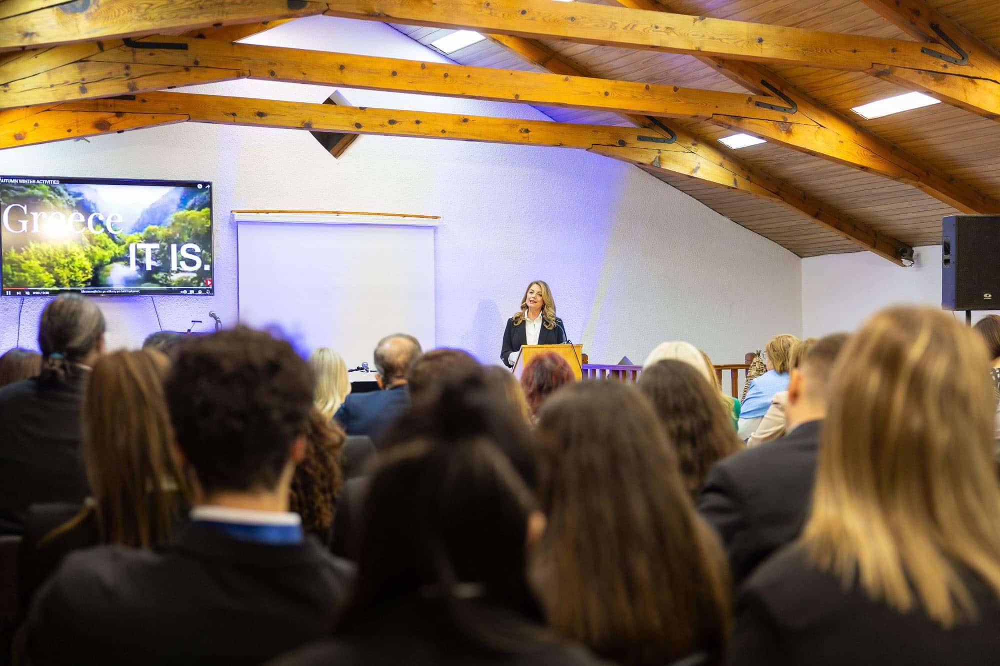

Περιβάλλον
Η Α.Μ.Κ.Ε. ΔΙΕΘΝΗΣ ΔΡΑΣΗ – INTERACTION δεσμεύεται στην προστασία του περιβάλλοντος και την προώθηση της βιώσιμης ανάπτυξης. Μέσω των δράσεών μας, επιδιώκουμε την αναβάθμιση του τόπου, τη βελτίωση της ποιότητας ζωής των κατοίκων και την ανάπτυξη της οικολογικής γνώσης και συνείδησης.

Συμμετοχή σε Πρωτοβουλίες Προστασίας Περιβάλλοντος
Συμμετέχουμε ενεργά σε πρωτοβουλίες που στοχεύουν στην προστασία του φυσικού περιβάλλοντος. Στηρίζουμε και υλοποιούμε δράσεις για τη διατήρηση της βιοποικιλότητας, την προστασία των οικοσυστημάτων και την αντιμετώπιση των περιβαλλοντικών προκλήσεων.

Ανάπτυξη Οικολογικής Γνώσης και Συνείδησης
Επενδύουμε στην εκπαίδευση και ευαισθητοποίηση του κοινού, ιδιαίτερα των νέων, σε θέματα περιβαλλοντικής προστασίας. Διοργανώνουμε εκπαιδευτικά προγράμματα, σεμινάρια και εκδηλώσεις που ενθαρρύνουν την κατανόηση των περιβαλλοντικών ζητημάτων και την υιοθέτηση υπεύθυνων συμπεριφορών.
Προώθηση Βέλτιστων Πρακτικών Διαχείρισης Απορριμμάτων και Ενέργειας
Αναπτύσσουμε και προωθούμε πρωτοβουλίες για τη βελτίωση της διαχείρισης απορριμμάτων και την εξοικονόμηση ενέργειας. Ενημερώνουμε για σύγχρονες πρακτικές ανακύκλωσης, κομποστοποίησης και χρήσης ανανεώσιμων πηγών ενέργειας, συμβάλλοντας σε ένα πιο βιώσιμο μέλλον.

Πραγματοποίηση Ημερίδων με Περιβαλλοντικά Θέματα
Διοργανώνουμε ημερίδες και εκδηλώσεις που εστιάζουν σε επίκαιρα περιβαλλοντικά ζητήματα. Συγκεντρώνουμε ειδικούς, ακαδημαϊκούς και φορείς για την ανταλλαγή γνώσεων, την παρουσίαση ερευνών και τη συζήτηση λύσεων για την προστασία του περιβάλλοντος.